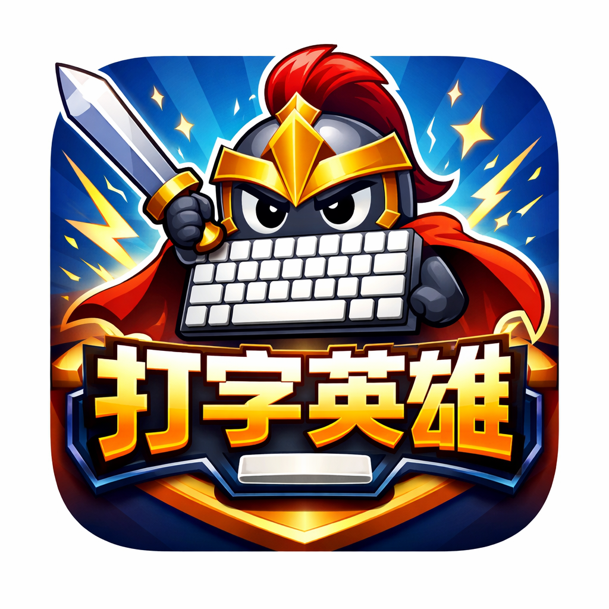

0
Combo!
重来
退出
0
Combo!
🎵
🔊
0.0s
当前耗时
0
字/分
100%
准确率
0/0
进度
00:00
总用时
0
平均速度
100%
平均准确
🚀
100
200
🏆
来源：小学语文
Tab
Q
W
E
R
T
Y
U
I
O
P
←
Caps
A
S
D
F
G
H
J
K
L
Enter
Shift
Z
X
C
V
B
N
M
Shift
Ctrl
Alt
Space
Alt
Ctrl
打字英雄
准备好开始这场热血的指尖冒险了吗？
击败每一个汉字，成为真正的键盘侠！
按 Enter 键开始冒险
恭喜你
成为了打字英雄！
重新开始
按 Enter 键重新开始